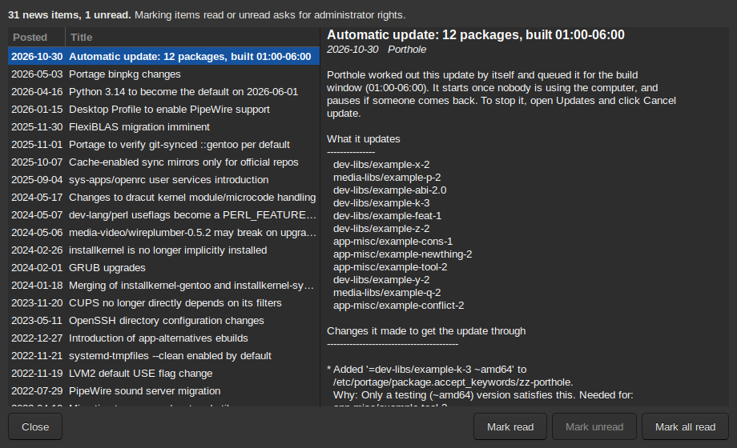

Gentoo publishes news items about changes that need you to do something: a profile to switch, a configuration file that moved, a package being replaced. Portage shows the ones that apply to this computer. Porthole shows them in its News window, along with its own reports about automatic updates.

Open it from Porthole, News… or Read news in Updates, which also shows how many items are unread. Unread items are in bold. Select one to read it.
Mark read, Mark unread and Mark all read change Portage's record of what you have read, which belongs to the system, so they ask for the administrator password (unless Porthole is unlocked).
With fully automatic updates, Porthole writes one item for each update it
runs by itself: what it updated, the changes it made and why, how to undo
them, and what it left for you. See How updates
run. These come from Porthole rather than from a repository, and
are kept in /var/lib/porthole/news (the last fifty).